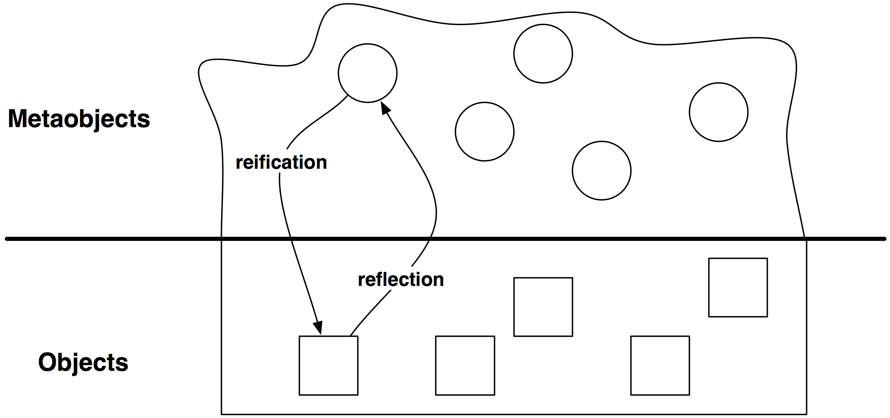
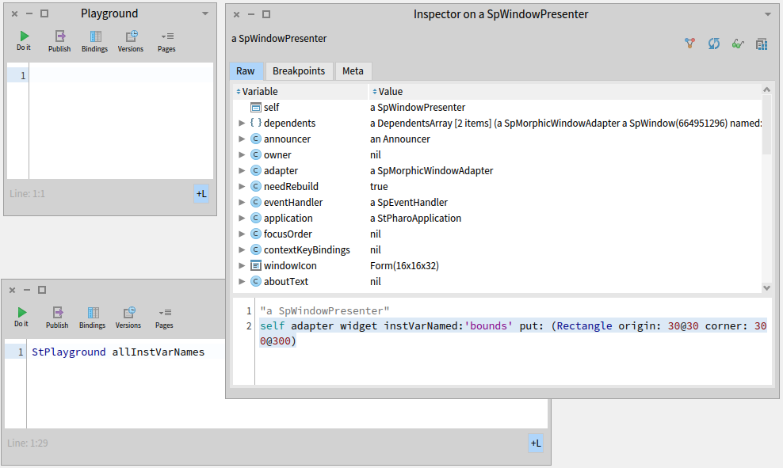
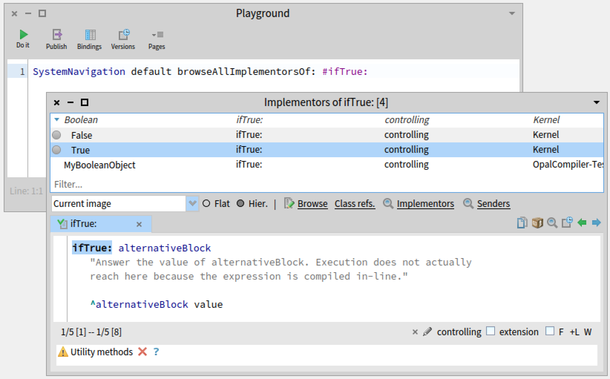
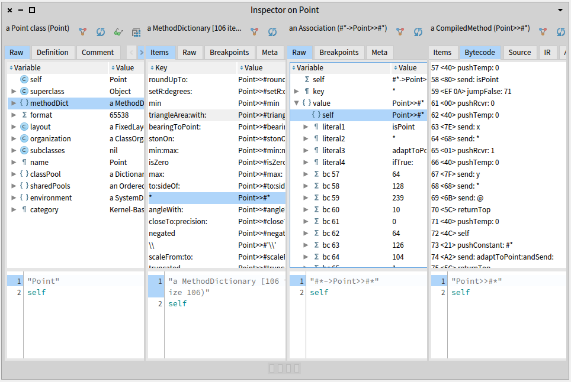
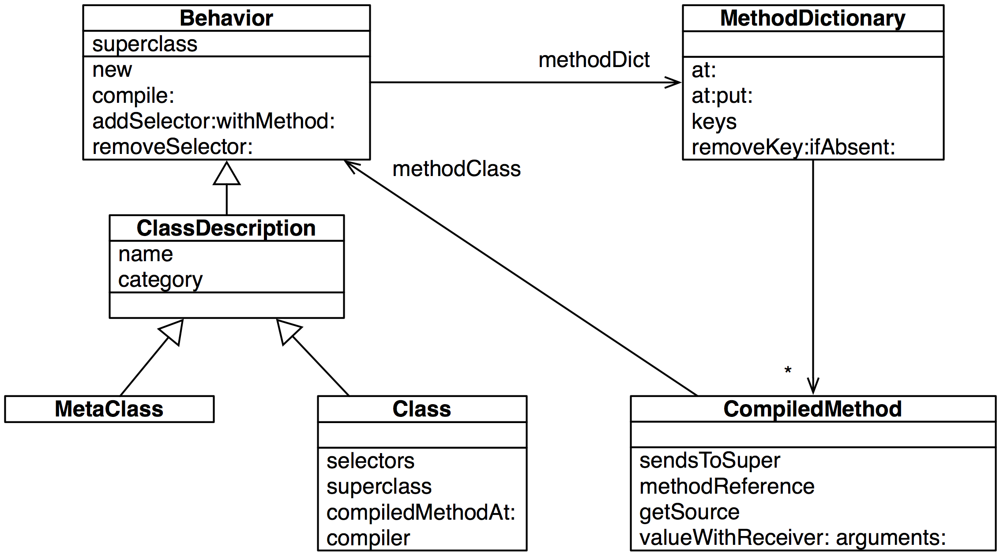
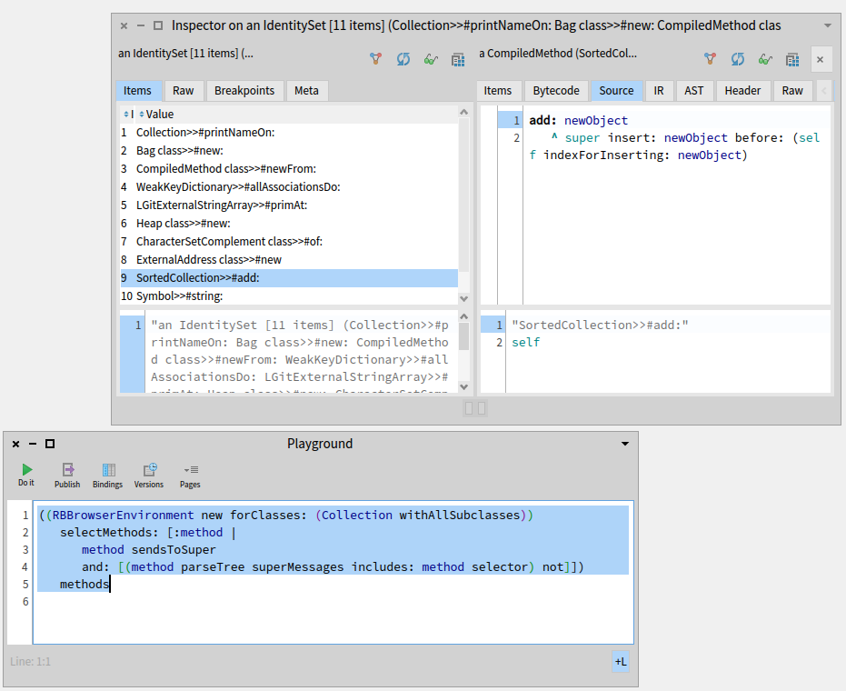
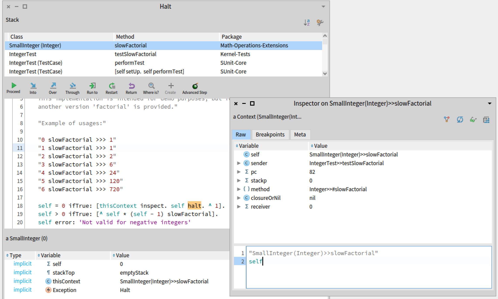

18 Reflection
Pharo is a reflective programming language. Reflection is both being able to query various aspects of the system own execution and modifying it. The query capabilities are often called introspection and the possibility called intercession. In this chapter we present several aspects around the introspection capabilities of Pharo: how to access and modify instance variable value, how to navigate the system, or how to perform cross references. Then we present some aspects of behavioral reflection, i.e., how to modify the system and extend it.
18.1 Reflection in a nutshell
Reflection supports the idea that programs are able to reflect on their own execution and structure. With reflection the internal mechanisms that support the execution of a program (class, methods, but also stack) are accessible to the developer using the same way than their normal programs. In Pharo it means that such internal mechanisms are described as objects and that the developer will send them messages. We often call the objects that support program execution metaobjects to express the fact that they are at another level than plain objects.
More technically, metaobjects of the runtime system are reified as ordinary objects, which can be queried and inspected. The metaobjects in Pharo are classes, metaclasses, method dictionaries, compiled methods, but also the run-time stack, processes, and so on. This form of reflection is also called introspection, and nowadays it is supported by many modern programming languages (it was heavily promoted by Smalltalk-80 the ancestor of Pharo).

Conversely, it is possible in Pharo to modify reified metaobjects and reflect these changes back to the runtime system (see Figure 18.1). This is also called intercession, and is supported mainly by dynamic programming languages, and only to a very limited degree by static languages. So pay attention when people say that Java is a reflective language, it is an introspective one not a reflective one.
A program that manipulates other programs (or even itself) is a metaprogram. For a programming language to be reflective, it should support both introspection and intercession. Introspection is the ability to examine the data structures that define the language, such as objects, classes, methods and the execution stack. Intercession is the ability to modify these structures, in other words to change the language semantics and the behavior of a program from within the program itself. Structural reflection is about examining and modifying the structures of the runtime, and behavioural reflection is about modifying the interpretation of these structures.
In this chapter we will focus mainly on structural reflection. We will explore many practical examples illustrating how Pharo supports introspection and metaprogramming.
18.2 Introspection
Using the inspector, you can look at an object, change the values of its instance variables, and even send messages to it.
Evaluate the following code in a playground:
w := StPlayground open.
w inspectThis will open a second playground and an inspector. The inspector shows the
internal state of this new playground, listing its instance variables on the
left (announcer, owner, ...) and the value of the
selected instance variable on the right.
StPlayground.
Now choose the inspector and click the playground area of the inspector which
has a comment on top and type self bounds: (Rectangle origin: 10@10 corner:
300@300 ) in it as shown in Figure 18.2 and then
Do It like you do with a code of a Playground.
Immediately you will see the Playground that we created will change and resize itself.
18.3 Accessing instance variables
How does the inspector work? In Pharo, all instance variables are protected.
In theory, it is impossible to access them from another object if the class
doesn't define any accessor. In practice, the inspector can access instance
variables without needing accessors, because it uses the reflective abilities of
Pharo. Classes define instance variables either by name or by
numeric indices. The inspector uses methods defined by the Object class to
access them: instVarAt: index and instVarNamed: aString can be used to
get the value of the instance variable at position index or identified by
aString, respectively. Similarly, to assign new values to these instance
variables, it uses instVarAt:put: and instVarNamed:put:.
For instance, you can change the value of the w binding of the first
workspace by evaluating:
w adapter widget instVarNamed:'bounds' put: (Rectangle origin: 30@30 corner: 300@300)Click on it to raise a refresh and see the result.
Instance variables
The method allInstVarNames returns all the names of the instance variables
of a given class.
StPlayground allInstVarNames
>>>
#(#dependents #announcer #owner #adapter #needRebuild #eventHandler #application #focusOrder
#contextKeyBindings #windowIcon #aboutText #askOkToClose #titleHolder #additionalSubpresentersMap
#layout #visible #extent #styles #millerList #model #lastPageSelectedTabName #withHeaderBar)The following code snippet shows how to display the values of the
instance variables of an arbitrary instance (w) of class StPlayground.
w := StPlayground someInstance.
w class allInstVarNames collect: [:each | each -> (w instVarNamed: each)]In the same spirit, it is possible to gather instances that have specific
properties iterating over instances of a class using an iterator such as
select:. For instance, to get all objects who are directly included in the
world morph (the main root of the graphical displayed elements), try this
expression:
Morph allSubInstances
select: [ :each |
| own |
own := (each instVarNamed: 'owner').
own isNotNil and: [ own isWorldMorph ]]18.4 About reflective behavior
Such expressions are handy for debugging or for building development tools, using them to develop conventional applications is a bad idea: these reflective methods break the encapsulation boundary of your objects. They break the tool navigation. They will make your code much harder to understand and maintain. A nice quote to remember is: 'With super powers come super responsibility'. So this is not because you can do something that you should.
18.5 About primitives
Both instVarAt: and instVarAt:put: are primitive methods, meaning that
they are implemented as primitive operations of the Pharo virtual machine.
If you consult the code of these methods, you will see the pragma
<primitive: N> where N is an integer.
This tags the method to be treated differently.
Object >> instVarAt: index
"Primitive. Answer a fixed variable in an object. ..."
<primitive: 173 error: ec>
self primitiveFailedAny Pharo code after the primitive declaration is executed only if the primitive fails. In this specific case, there is no way to implement this method, so the whole method just fails.
Other methods are implemented on the VM for faster execution.
For example some arithmetic operations on SmallInteger :
* aNumber
"Primitive. Multiply the receiver by the argument and answer with the
result if it is a SmallInteger. Fail if the argument or the result is not a
SmallInteger. Essential. No Lookup. See Object documentation whatIsAPrimitive."
<primitive: 9>
^ super * aNumberIf this primitive fails, for example if the VM does not handle the type of the argument, the Pharo code is executed. Although it is possible to modify the code of primitive methods, beware that this can be risky business for the stability of your Pharo system.
18.6 Querying classes and interfaces
The development tools in Pharo (system browser, debugger, inspector...) all use the reflective features we have seen so far.
Here are a few other messages that might be useful to build development tools:
The message isKindOf: aClass returns true if the receiver is instance of aClass or
of one of its subclasses. For instance:
1.5 class
>>> SmallFloat641.5 isKindOf: Float
>>> true1.5 isKindOf: Number
>>> true1.5 isKindOf: Integer
>>> falseThe message respondsTo: aSymbol returns true if the receiver has a method whose selector
is aSymbol. For instance:
1.5 respondsTo: #floor
>>> true "since Number implements floor"1.5 floor
>>> 1Exception respondsTo: #,
>>> true "exception classes can be grouped"Watch out!
Although these features are especially useful for implementing development tools, they are normally not appropriate for typical applications. Asking an object for its class, or querying it to discover which messages it understands, are typical signs of design problems, since they violate the principle of encapsulation. Development tools, however, are not normal applications, since their domain is that of software itself. As such these tools have a right to dig deep into the internal details of code.
18.7 Simple code metrics
Let's see how we can use Pharo's introspection features to quickly extract
some code metrics. Code metrics measure aspects such as the depth of the
inheritance hierarchy, the number of direct or indirect subclasses, the number
of methods or instance variables in each class, or the number of locally
defined methods or instance variables. Here are a few metrics for the class
Morph, which is the superclass of all graphical objects in Pharo, revealing
that it is a huge class, and that it is at the root of a huge hierarchy.
This shows that it needs some refactoring!
"inheritance depth"
Morph allSuperclasses size.
>>> 2"number of methods"
Morph allSelectors size.
>>> 1442"number of instance variables"
Morph allInstVarNames size.
>>> 6"number of new methods"
Morph selectors size.
>>> 931"number of new variables"
Morph instVarNames size.
>>> 6"direct subclasses"
Morph subclasses size.
>>> 73"total subclasses"
Morph allSubclasses size.
>>> 445"total lines of code!"
Morph linesOfCode.
>>> 5088One of the most interesting metrics in the domain of object-oriented languages is the number of methods that extend methods inherited from the superclass. This informs us about the relation between the class and its superclasses. In the next sections we will see how to exploit our knowledge of the runtime structure to answer such questions.
18.8 Browsing instances
In Pharo, everything is an object. In particular, classes are objects that
provide useful features for navigating through their instances. Most of the
messages we will look at now are implemented in Behavior, so they are
understood by all classes.
For example, you can obtain a random instance of a given class by sending it
the message someInstance.
Point someInstance
>>> (-1@-1)You can also gather all the instances with allInstances, or the number of
active instances in memory with instanceCount.
ByteString allInstances
>>> #('collection' 'position' ...)ByteString instanceCount
>>> 58514String allSubInstances size
>>> 138962Such methods access the instances that are stored inside methods. And since Pharo has around 130 000 methods. Such numbers are not totally crazy.
18.9 From methods to instance variables
These features can be very useful when debugging an application, because you can ask a class to enumerate those of its methods exhibiting specific properties. Here are some more interesting and useful methods for code discovery through reflection.
whichSelectorsAccess:
returns the list of all selectors of methods that read or write the instance variable named by the argument
whichSelectorsStoreInto:
returns the selectors of methods that modify the value of an instance variable
whichSelectorsReferTo:
returns the selectors of methods that send a given message
Point whichSelectorsAccess: 'x'
>>> #(#octantOf: #roundDownTo: #+ #asIntegerPoint #transposed ...)Point whichSelectorsStoreInto: 'x'
>>> #(#fromSton: #setX:setY: #setR:degrees: #bitShiftPoint:)Point whichSelectorsReferTo: #+
>>> #(#+)The following messages take inheritance into account:
whichClassIncludesSelector:
returns the superclass that implements the given message
unreferencedInstanceVariables
returns the list of instance variables that are neither used in the receiver class nor any of its subclasses
Rectangle whichClassIncludesSelector: #inspect
>>> ObjectRectangle unreferencedInstanceVariables
>>> #()18.10 About SystemNavigation
SystemNavigation is a facade that supports various useful methods for
querying and browsing the source code of the system. SystemNavigation
default returns an instance you can use to navigate the system. For example:
SystemNavigation default allClassesImplementing: #yourself
>>> an OrderedCollection(Object)The following messages should also be self-explanatory:
SystemNavigation default allSentMessages size
>>>43985(SystemNavigation default allUnsentMessagesIn: Object selectors) size
>>> 37SystemNavigation default allUnimplementedCalls size
>>> 335Note that messages implemented but not sent are not necessarily useless, since
they may be sent implicitly (e.g., using perform:). Messages sent but
not implemented, however, are more problematic, because the methods sending
these messages will fail at execution. They may be a sign of unfinished
implementation, obsolete APIs, or missing libraries.
They are also frequent in tests about implementation of tools.
Point allCallsOn returns all messages sent
explicitly to Point as a receiver.
All these features are integrated into the programming environment of Pharo, in
particular the code browsers. As we mentioned before, there are convenient
keyboard shortcuts for browsing all implementors (CMD-m) and
browsing senders (CMD-n) of a given message. What is perhaps
not so well known is that there are many such pre-packaged queries implemented
as methods of the SystemNavigation class in the query protocol. For
example, you can programmatically browse all implementors of the message
ifTrue: by evaluating:
SystemNavigation default browseAllImplementorsOf: #ifTrue:ifTrue:.
Particularly useful are the methods browseAllSelect: and
browseMethodsWith SourceString:matchCase:.
Here are two different ways to
browse all methods in the system that perform super sends (the first way is
rather brute force, the second way is better and eliminates some false
positives):
SystemNavigation default
browseMethodsWithSourceString: 'super'
matchCase: trueSystemNavigation default
browseAllSelect: [:method | method sendsToSuper ]18.11 Classes, method dictionaries, and methods
Since classes are objects, we can inspect or explore them just like any other object.
Evaluate Point inspect. In Figure 18.4, the inspector shows the structure of class
Point. You can see that the class stores its methods in a dictionary,
indexing them by their selector. The selector #* points to the decompiled
bytecode of Point>>*.
Point and the bytecode of its #* method.
Let us consider the relationship between classes and methods. In Figure
18.5 we see that classes and metaclasses have the common
superclass Behavior. This is where new is defined, amongst other key
methods for classes. Every class has a method dictionary, which maps method
selectors to compiled methods. Each compiled method knows the class in which it
is installed. In Figure 18.4 we can even see the decompiled bytecodes of the method.

We can exploit the relationships between classes and methods to pose queries about the system. For example, to discover which methods that do not override superclass methods, we can navigate from the class to the method dictionary as follows:
| aClass |
aClass := SmallInteger.
aClass methodDict keys select: [ :aMethod |
(aClass superclass canUnderstand: aMethod) not ]
>>> an IdentitySet(#threeDigitName #printStringBase:nDigits: ...)A compiled method does not simply store the bytecode of a method. It is also an
object that provides numerous useful methods for querying the system. One such
method is isAbstract (which tells if the method sends subclassResponsibility). We can use it to identify all the abstract methods of a class.
| aClass |
aClass := Number.
aClass methodDict keys select: [ :aMethod |
(aClass>>aMethod) isAbstract ]
>>> #(#* #asFloat #storeOn:base: #printOn:base: #+ #round: #/ #- #adaptToInteger:andSend: #nthRoot: #sqrt #adaptToFraction:andSend:)Note that this code sends the >> message to a class to obtain the compiled
method for a given selector.
To browse the super-sends within a given hierarchy, for example within the Collections hierarchy, we can pose a more sophisticated query:
class := Collection.
SystemNavigation default
browseMessageList: (class withAllSubclasses gather: [ :each |
each methodDict associations
select: [:assoc | assoc value sendsToSuper ]
thenCollect: [:assoc | RGMethodDefinition realClass: each selector: assoc key]])
name: 'Supersends of ', class name, ' and its subclasses'Note how we navigate from classes to method dictionaries to compiled methods to
identify the methods we are interested in. A RGMethodDefinition is a
lightweight proxy for a compiled method that is used by many tools. There is a
convenience method CompiledMethod>>methodReference to return the method
reference for a compiled method.
(Object>>#=) methodReference selector
>>> #=18.12 Browsing environments
Although SystemNavigation offers some useful ways to programmatically query
and browse system code, there are more ways. The Browser, which is integrated
into Pharo, allows us to restrict the environment in which a search is to
perform.
Suppose we are interested to discover which classes refer to the class
Point but only in its own package.
Open a browser on the class Point.
Click on the top level package Kernel in the package pane and select
Scoped View radio button. Browser now shows only the package Kernel and
all classes within this package (and some classes which have extension methods
from this package).
Now, in this browser, select again the class Point,
Action-click on the class name and select Class refs.
This will show all methods that have references to the class Point but only those
from the package Kernel.
Compare this result with the search from a Browser without restricted scope.
This scope is what we call a Browsing Environment (class
RBBrowserEnvironment). All other searches, like senders of a method or
implementors of a method from within this browser are restricted to this
environments too.
Browser environments can also be created programmatically. Here, for example, we
create a new RBBrowserEnvironment for Collection and its subclasses,
select the super-sending methods, and browse the resulting environment.
((RBBrowserEnvironment new forClasses: (Collection withAllSubclasses))
selectMethods: [:method | method sendsToSuper])
browse.Note how this is considerably more compact than the earlier, equivalent example
using SystemNavigation.
Finally, we can find just those methods that send a different super message programmatically as follows:
((RBBrowserEnvironment new forClasses: (Collection withAllSubclasses))
selectMethods: [:method |
method sendsToSuper
and: [(method parseTree superMessages includes: method selector) not]])
Here we ask each compiled method for its (Refactoring Browser) parse tree, to find out whether the super messages differ from the method's selector.
Have a look at the querying protocol of the class RBProgramNode to see
some the things we can ask of parse trees.
In Figure 18.6 we can see that 10 of such methods have been found within the Collection hierarchy, including Collection>>printNameOn:, which sends super printOn:.
Of course, we could also display the results using a message browser but this is another story.

18.13 Pragmas: method annotation
A pragma is a method annotation that specifies data about a program, but is not involved in the execution of the program. Pragmas have no direct effect on the operation of the method they annotate. Pragmas have a number of uses, among them:
Information for the compiler: pragmas can be used by the compiler to make a method call a primitive function. This function has to be defined by the virtual machine or by an external plug-in.
Runtime processing: Some pragmas are available to be examined at runtime.
A method may declare one or more pragmas, and the pragmas have to be declared prior any Pharo statement. Internally a pragma is a static message send with literal arguments.
We briefly saw pragmas when we introduced primitives earlier in this chapter.
A primitive is nothing more than a pragma declaration. Consider the expression <primitive: 173
error:ec> defined in the Object>>#instVarAt: method.
The pragma's selector is primitive:error: and its arguments is an immediate literal value, 173.
The variable ec is an error code, filled by the VM in case the execution of
the implementation on the VM side failed.
The compiler is probably the bigger user of pragmas.
SUnit is another tool that makes use of annotations.
SUnit is able to estimate the coverage of an application from a test unit.
One may want to exclude some methods from the coverage.
This is the case of the documentation method in SplitJointTest class:
SplitJointTest class >> documentation
<ignoreForCoverage>
"self showDocumentation"
^ 'This package provides function.... "By simply annotating a method with the pragma <ignoreForCoverage> one can
control the scope of the coverage.
Pragmas are first class objects instances of the class Pragma.
A compiled method answers to the message pragmas by returning an array of pragmas.
(SplitJoinTest class >> #documentation) pragmas.
>>> an Array(<ignoreForCoverage>)(SmallFloat64>>#+) pragmas
>>> an Array(<primitive: 541>)Sending the message allNamed:in: to the class Pragma, we can identify
the methods defining a particular pragma.
In the following example, the class side of SplitJoinTest contains some methods annotated with
<ignoreForCoverage>:
Pragma allNamed: #ignoreForCoverage in: SplitJoinTest class
>>> an Array(<ignoreForCoverage> <ignoreForCoverage>)A pragma knows in which method it is defined (using method), the name of the
method (selector), the class that contains the method (methodClass), its
number of arguments (numArgs), about the literals the pragma has for
arguments (hasLiteral: and hasLiteralSuchThat:).
18.14 Accessing the run-time context
We have seen how Pharo's introspective capabilities let us query and explore objects, classes and methods. But what about the run-time environment?
Method contexts
In fact, the run-time context of an executing method is in the virtual machine — it is not in the image at all! On the other hand, the debugger obviously has access to this information, and we can happily explore the run-time context, just like any other object. How is this possible?
Actually, there is nothing magical about the debugger. The secret is the
pseudo-variable thisContext, which we have encountered only in passing
before.
Whenever thisContext is referred to in a running method, the entire
run-time context of that method is reified and made available to the image as a
series of chained Context objects.
We can easily experiment with this mechanism ourselves.
Change the definition of Integer>>slowFactorial by inserting the expression
thisContext inspect. self halt. as shown below:
Integer >> slowFactorial
"Answer the factorial of the receiver."
self = 0 ifTrue: [thisContext inspect. self halt. ^ 1].
self > 0 ifTrue: [^ self * (self - 1) slowFactorial].
self error: 'Not valid for negative integers'Now evaluate 3 slowFactorial in a workspace.
You should obtain both a debugger window and an inspector, as shown in Figure 18.7.
thisContext.
Inspecting thisContext gives you full access to the current execution
context, the stack, the local tempories and arguments, the senders chain and the
receiver. Welcome to the poor man's debugger! If you now browse the class of
the explored object (i.e., by evaluating self browse in the bottom pane
of the inspector) you will discover that it is an instance of the class
Context, as is each sender in the chain.
thisContext is not intended to be used for day-to-day programming, but it is
essential for implementing tools like debuggers, and for accessing information
about the call stack. You can evaluate the following expression to discover
which methods make use of thisContext:
SystemNavigation default browseMethodsWithSourceString: 'thisContext' matchCase: trueAs it turns out, one of the most common applications is to discover the sender of a message.
A typical application consists of providing better information to the developer.
Let us take an example, by convention, methods that send self subclassResponsibility
are considered to be abstract. But how does Object>>subclassResponsibility
provide a useful error message indicating which abstract method has been
invoked? Very simply, by asking thisContext for the sender.
subclassResponsibility
"This message sets up a framework for the behavior of the class' subclasses.
Announce that the subclass should have implemented this message."
SubclassResponsibility signalFor: thisContext sender selector18.15 Intelligent contextual breakpoints
The Pharo way to set a breakpoint is to evaluate self halt at an
interesting point in a method.
This will cause thisContext to be reified, and a debugger window will open at the breakpoint.
Unfortunately this poses problems for methods that are intensively used in the system.
Suppose, for instance, that we want to explore the execution of
Morph>>openInWorld. Setting a breakpoint in this method is
problematic.
Pay attention the following experiment will break everything! Take a fresh image and set the following breakpoint:
Morph >> openInWorld
"Add this morph to the world."
self halt.
self openInWorld: self currentWorldNotice how your image immediately freezes as soon as you try to open any new
Morph (Menu/Window/...)! We do not even get a debugger window. The problem is
clear once we understand that 1) Morph>>openInWorld is used by many parts of
the system, so the breakpoint is triggered very soon after we interact with the
user interface, but 2) the debugger itself sends openInWorld as soon as
it opens a window, preventing the debugger from opening!
What we need is a way to conditionally halt only if we are in a context of interest.
This is exactly what Object>>haltIf: offers.
Suppose now that we only want to halt if openInWorld is sent from, say, the
context of MorphTest>>testOpenInWorld.
Fire up a fresh image again, and set the following breakpoint:
Morph >> openInWorld
"Add this morph to the world."
self haltIf: #testOpenInWorld.
self openInWorld: self currentWorldThis time the image does not freeze. Try running the MorphTest.
It will halt and open a debugger.
MorphTest run: #testOpenInWorld.How does this work? Let's have a look at Object>>haltIf:. It first calls
if: with the condition to the Exception class Halt. This method
itself checks if the condition is a symbol, which is true and
calls haltIf-CallChain:contains:
Object >> haltIf: condition
<debuggerCompleteToSender>
Halt if: condition.Halt class >> haltIfCallChain: haltSenderContext contains: aSelector
| cntxt |
cntxt := haltSenderContext.
[ cntxt isNil ] whileFalse: [
cntxt selector = aSelector ifTrue: [ self signalIn: haltSenderContext ].
cntxt := cntxt sender ]Starting from thisContext, haltIfCallChainContains: goes up through the
execution stack, checking if the name of the calling method is the same as the
one passed as parameter. If this is the case, then it signals itself, the
exception which, by default, summons the debugger.
It is also possible to supply a boolean or a boolean block as an argument to
haltIf:, but these cases are straightforward and do not make use of
thisContext.
18.16 Intercepting not understood messages
So far we have used Pharo's reflective features mainly to query and explore objects, classes, methods and the run-time stack. Now we will look at how to use our knowledge of its system structure to intercept messages and modify behaviour at run time.
When an object receives a message, it first looks in the method dictionary of
its class for a corresponding method to respond to the message. If no such
method exists, it will continue looking up the class hierarchy, until it reaches
Object. If still no method is found for that message, the object will send
itself the message doesNotUnderstand: with the message selector as its
argument. The process then starts all over again, until
Object>>doesNotUnderstand: is found, and the debugger is launched.
But what if doesNotUnderstand: is overridden by one of the subclasses of
Object in the lookup path? As it turns out, this is a convenient way of
realizing certain kinds of very dynamic behaviour. An object that does not
understand a message can, by overriding doesNotUnderstand:, fall back to an
alternative strategy for responding to that message.
Two very common applications of this technique are 1) to implement lightweight proxies for objects, and 2) to dynamically compile or load missing code. This is what we will describe in the following sections.
18.17 Lightweight proxies
To implement lightweight proxies, we introduce a minimal object to act as a proxy for an
existing object. Since the proxy will implement virtually no methods of its own,
any message sent to it will be trapped by doesNotUnderstand:.
By implementing this message, the proxy can then take special action before
delegating the message to the real subject it is the proxy for.
Let us have a look at how this may be implemented.
We define a LoggingProxy as follows:
ProtoObject subclass: #LoggingProxy
instanceVariableNames: 'subject invocationCount'
classVariableNames: ''
package: 'PBE-Reflection'Note that we subclass ProtoObject rather than Object because we do not
want our proxy to inherit around 450 methods (!) from Object.
Object methodDict size
>>> 479Our proxy has two instance variables: the subject it is a proxy for, and a
count of the number of messages it has intercepted.
We initialize the two instance variables and we provide an accessor for the message count.
Initially the subject variable points to the proxy object itself.
LoggingProxy >> initialize
invocationCount := 0.
subject := self.LoggingProxy >> invocationCount
^ invocationCountWe simply intercept all messages not understood, print them to the
Transcript, update the message count, and forward the message to the real
subject.
LoggingProxy >> doesNotUnderstand: aMessage
Transcript show: 'performing ', aMessage printString; cr.
invocationCount := invocationCount + 1.
^ aMessage sendTo: subjectHere comes a bit of magic. We create a new Point object and a new
LoggingProxy object, and then we tell the proxy to become: the point
object:
point := 1@2.
LoggingProxy new become: point.This expression has the effect of swapping all the references to the object pointed by the variable point to the proxy instance and (vice versa). Most importantly, the proxy's subject
instance variable will now refer to the point!
point invocationCount
>>> 0point + (3@4)
>>> 4@6point invocationCount
>>> 1This works nicely in most cases, but there are some shortcomings:
point class
>>> LoggingProxyActually the method class is implemented in ProtoObject, but even if it
were implemented in Object, which LoggingProxy does not inherit from, it
isn't actually send to the LoggingProxy or its subject.
The message is directly answered by the virtual machine.
yourself is also never truly sent.
Other messages that may be directly interpreted by the VM, depending on the receiver, include:
+- < > <= >= = ~= * / \\ =\=
@ bitShift: // bitAnd: bitOr:
at: at:put: size
next nextPut: atEnd
blockCopy: value value: do: new new: x ySelectors that are never sent, because they are inlined by the compiler and transformed to comparison and jump bytecodes:
ifTrue: ifFalse: ifTrue:ifFalse: ifFalse:ifTrue:
and: or:
whileFalse: whileTrue: whileFalse whileTrue
to:do: to:by:do:
caseOf: caseOf:otherwise:
ifNil: ifNotNil: ifNil:ifNotNil: ifNotNil:ifNil:Attempts to send these messages to non-boolean normally results in an exception
from the VM as it can not use the inlined dispatching for non-boolean receivers.
You can intercept this and define the proper behavior by overriding
mustBeBoolean in the receiver or by catching the NonBooleanReceiver
exception.
Even if we can ignore such special message sends, there is another fundamental
problem which cannot be overcome by this approach: self-sends cannot be
intercepted:
point := 1@2.
LoggingProxy new become: point.
point invocationCount
>>> 0point rectangle: (3@4)
>>> 1@2 corner: 3@4point invocationCount
>>> 1Our proxy has been cheated out of two self-sends in the rectangle: method:
Point >> rectangle: aPoint
"Answer a Rectangle that encompasses the receiver and aPoint.
This is the most general infix way to create a rectangle."
^ Rectangle
point: self
point: aPointAlthough messages can be intercepted by proxies using this technique, one should be aware of the inherent limitations of using a proxy. In Section 18.19 we will see another, more general approach for intercepting messages.
18.18 Generating missing methods
The other most common application of intercepting not understood messages is to dynamically load or generate missing methods. Consider a very large library of classes with many methods. Instead of loading the entire library, we could load a stub for each class in the library. The stubs know where to find the source code of all their methods. The stubs simply trap all messages not understood, and dynamically creates the missing methods on demand. At some point, this behaviour can be deactivated, and the loaded code can be saved as the minimal necessary subset for the client application.
Let us look at a simple variant of this technique where we have a class that automatically adds accessors for its instance variables on demand. Here is the logic: Any message not understood will be trapped. If an instance variable with the same name as the message sent exists, then we ask our class to compile an accessor for that instance variables and we re-send the message.
Object subclass: #DynamicAccessors
instanceVariableNames: 'x'
classVariableNames: ''
package: 'PBE-Reflection'DynamicAcccessors >> doesNotUnderstand: aMessage
| messageName |
messageName := aMessage selector asString.
(self class instVarNames includes: messageName)
ifTrue: [
self class compile: messageName, String cr, ' ^ ', messageName.
^ aMessage sendTo: self ].
^ super doesNotUnderstand: aMessageSuppose the class DynamicAccessors has an instance variable
x but no pre-defined accessor. Then the following will generate the accessor
dynamically and retrieve the value:
myDA := DynamicAccessors new.
myDA x
>>> nilLet us step through what happens the first time the message x is sent to our
object (see Figure 18.8).
(1) We send x to myDA, (2) the message is looked up in the class, and
(3) not found in the class hierarchy. (4) This causes self doesNotUnderstand: #x to be sent back to the object, (5) triggering a new lookup. This time
doesNotUnderstand: is found immediately in DynamicAccessors, (6) which
asks its class to compile the string 'x ^ x'. The compile method is
looked up (7), and (8) finally found in Behavior, which (9-10) adds the new
compiled method to the method dictionary of DynamicAccessors. Finally,
(11-13) the message is resent (using the message sendTo:), and this time it is found.
In case the original message sent does not correspond to and instance variables, the default behavior of doesNotUnderstand:
is invoked using super.
The same technique can be used to generate setters for instance variables, or other kinds of boilerplate code, such as visiting methods for a Visitor.
About the message sendTo:.
The method sendTo: on the class Message is implemented as follows:
Message >> sendTo: receiver
"answer the result of sending this message to receiver"
^ receiver perform: selector withArguments: argsThe method Object>>perform: can be used to send messages that are composed at run-time:
5 perform: #factorial
>>> 1206 perform: ('fac', 'torial') asSymbol
>>> 7204 perform: #max: withArguments: (Array with: 6)
>>> 618.19 Objects as method wrappers
We have already seen that compiled methods are objects in Pharo, and they support a number of methods that allow the programmer to query the runtime system.
What is perhaps a bit more surprising, is that any object can play the role of a compiled method,
and be placed inside a method dictionary.
All such an object has to do is respond to the message run:with:in: and a few other important messages.
Using this mechanism we can build other spying tools.
Here is the principle: we create objects that refer to original method to execute them, but replace the methods
in a method dictionary by such objects (called method wrappers).
This way can log if a method has been executed and the number of times it was executed.
We will play with the principle of method wrappers.
Pharo comes with a simple class named ObjectsAsMethodsExample to illustrate this principle.
Define an empty class Demo. Evaluate Demo new answer42 and notice how
the usual Message Not Understood error is raised.
Object subclass: #Demo
instanceVariableNames: ''
classVariableNames: ''
package: 'PBE-Reflection'Demo new answer42Now we will install a plain object in the method dictionary of our Demo
class.
Demo methodDict
at: #answer42
put: ObjectsAsMethodsExample newNow try again to print the result of Demo new answer42. This time we get the
answer 42.
Demo new answer42
>>> 42If we take look at the class ObjectsAsMethodsExample we will find the
following methods:
ObjectsAsMethodsExample >> run: oldSelector with: arguments in: aReceiver
^ self perform: oldSelector withArguments: argumentsObjectsAsMethodsExample >> answer42
^ 42When our Demo instance receives the message answer42, method lookup
proceeds as usual, however the virtual machine will detect that in place of a
compiled method, an ordinary Pharo object is trying to play this role.
The VM will then send this object a new message run:with:in: with the original
method selector, arguments and receiver as arguments. Since
ObjectsAsMethodsExample implements this method, it intercepts the message
and delegates it to itself.
We can remove the fake method as follows:
Demo methodDict removeKey: #answer42 ifAbsent: []If we take a closer look at ObjectsAsMethodsExample, we will see that its
superclass also implements some methods like flushcache, methodClass:
and selector:, but they are all empty. These messages may be sent to a
compiled method, so they need to be implemented by an object pretending to be a
compiled method. flushcache is the most important method to be implemented;
others may be required by some tools and depending on whether the method is
installed using Behavior>>addSelector:withMethod: or directly using
MethodDictionary>>at:put:.
Now for serious use of the idea presented in this section, we strongly suggest to use the library named MethodProxies and available on the http://github.com/pharo-contributions/MethodProxies since it is a lot more robust and safer.
18.20 Chapter summary
Reflection refers to the ability to query, examine and even modify the metaobjects of the runtime system as ordinary objects.
- The Inspector uses
instVarAt:and related methods to view private instance variables of objects. - The method
Behavior>>allInstancesquery instances of a class. - The messages
class,isKindOf:,respondsTo:etc. are useful for gathering metrics or building development tools, but they should be avoided in regular applications: they violate the encapsulation of objects and make your code harder to understand and maintain. SystemNavigationis a utility class holding many useful queries for navigation and browsing the class hierarchy. For example, useSystemNavigation default browseMethodsWithSourceString: 'pharo' matchCase:true.to find and browse all methods with a given source string. (Slow, but thorough!)- Every Pharo class points to an instance of
MethodDictionarywhich maps selectors to instances ofCompiledMethod. A compiled method knows its class, closing the loop. RGMethodDefinitionis a lightweight proxy for a compiled method, providing additional convenience methods, and used by many Pharo tools.RBBrowserEnvironment, part of the Refactoring Browser infrastructure, offers a more refined interface thanSystemNavigationfor querying the system, since the result of a query can be used as a the scope of a new query. Both GUI and programmatic interfaces are available.thisContextis a pseudo-variable that reifies the runtime stack of the virtual machine. It is mainly used by the debugger to dynamically construct an interactive view of the stack. It is also especially useful for dynamically determining the sender of a message.- Contextual breakpoints can be set using
haltIf:, taking a method selector as its argument.haltIf:halts only if the named method occurs as a sender in the run-time stack. - A common way to intercept messages sent to a given target is to use a minimal object as a proxy for that target. The proxy implements as few methods as possible, and traps all message sends by implementing
doesNotunderstand:. It can then perform some additional action and then forward the message to the original target. - Send
become:to swap the references of two objects, such as a proxy and its target. - Beware, some messages, like
classandyourselfare never really sent, but are interpreted by the VM. Others, like+,-andifTrue:may be directly interpreted or inlined by the VM depending on the receiver. - Another typical use for overriding
doesNotUnderstand:is to lazily load or compile missing methods.doesNotUnderstand:cannot trapself-sends.